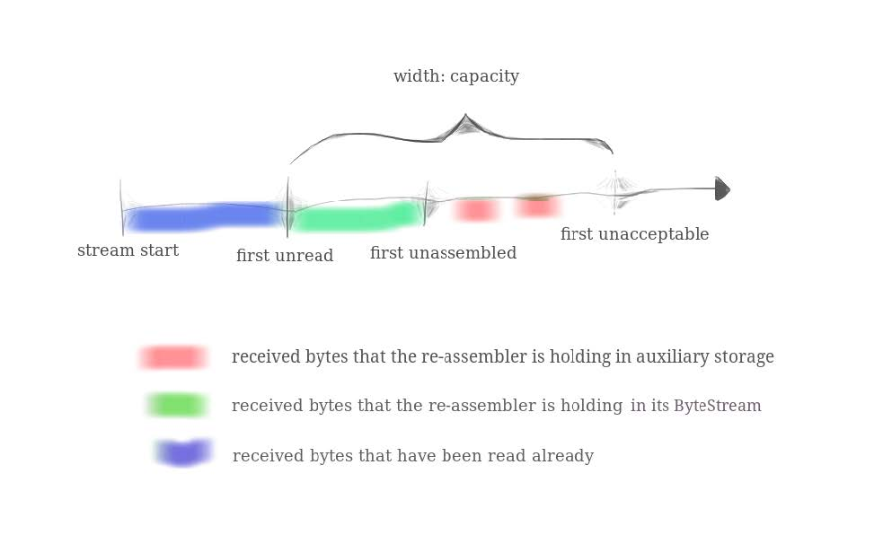
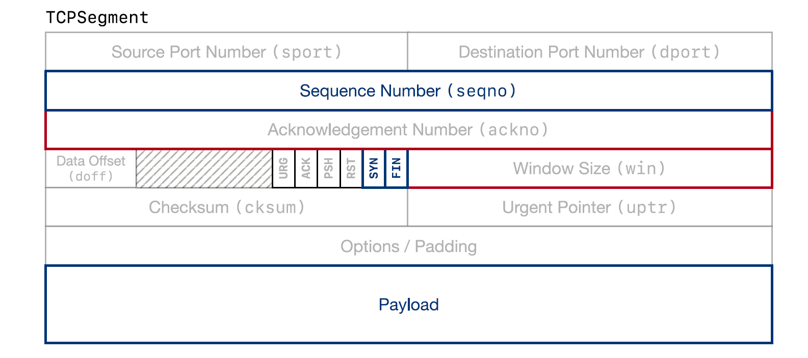
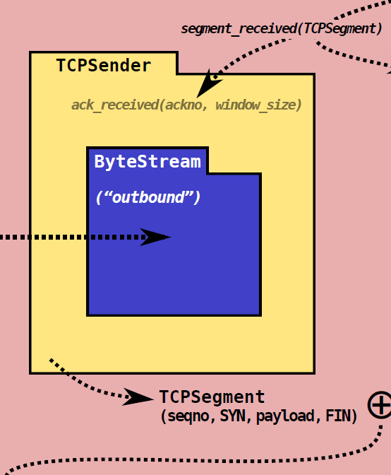
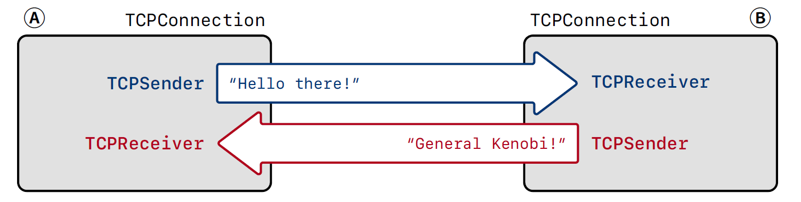

基于C++的用户层TCP协议栈实现
网络基础大作业——孙加辉
Part1: stitching substrings into a byte stream
为什么需要字节整流器?
“TCP robustness against reordering and duplication comes from its ability to stitch arbitrary excerpts of the byte stream back into the original stream. Implementing this in a discrete testable module will make handling incoming segments much easier..”
内部结构
API接口
StreamReassembler(const size_t capacity);
// 核心函数:把以index开头的data放入到整流器中
void push_substring(const string &data, const uint64_t index, const bool eof);
// Access the reassembled ByteStream (your code from Lab 0)
ByteStream &stream_out();
// The number of bytes in the substrings stored but not yet reassembled
size_t unassembled_bytes() const;
// Is the internal state empty (other than the output stream)?
bool empty() const;
代码实现
Part2: TCP Receiver
“ In TCP, acknowledgment tells the sender what bytes it needs to send or resend. Flow control means, \What range of indices is the receiver interested and willing to receive?" (usually as a function of its remaining capacity). This tells the sender how much it's allowed to send.”
Overview
- Seqno, SYN, FIN, Payload
- Ackno, Window Size
64-bit index转换为32-bit
WrappingInt32 wrap(uint64_t n, WrappingInt32 isn) {
uint64_t temp = n + isn.raw_value();
temp &= ((1ll << 32) - 1);
uint32_t result_raw_value = static_cast(temp);
return WrappingInt32{result_raw_value};
}
uint64_t unwrap(WrappingInt32 n, WrappingInt32 isn, uint64_t checkpoint) {
WrappingInt32 c = wrap(checkpoint, isn);
int64_t offset = n.raw_value() - c.raw_value();
int64_t ans = checkpoint + offset;
if(offset > (1ll << 31) && ans >= (1ll << 32)){
ans = ans - (1ll << 32);
}
return ans;
}
实现思路
- 从TCP Connection另一端接收Segment
- 把Segment放到整流器中
- 计算Ackno & Window Size, 放到Outgoing Segment中
代码接口
void segment_received(const TCPSegment &seg);
std::optional ackno() const;
size_t window_size() const;
- segment_received(): 主要的工作就是从seg中抽取seqno, 转换为stream index和数据一起放到整流器中
- ackno(): 未写入output_stream中的第一个字节位置, 用于可靠传输
- window_size(): capacity - 当前output_stream中的字节数 = 整流器的大小, 用于流量控制
Part3: TCP Sender
“ The basic principle is to send whatever the receiver will allow us to send, and keep retransmitting until the receiver acknowledges each segment. This is called automatic repeat request (ARQ). The sender divides the byte stream up into segments and sends them, as much as the receiver's window allows.The sender's job is to make sure the receiver gets each byte at least once..”
Overview
- 记录TCP Receiver发回来的Ackno/Window Size
- 尽量填充window, 创建新的TCP segment(包含SYN/FIN), 直到window被填充满/上层ByteStream为空
- 重新发送超时未被确认收到的outstanding segments
重传机制的设计思路
实现了一个retransmission timer, 被tick调用, 用于重传提醒.
- 重传最近未被确认的一个segment
- 记录连续重传的次数, TCPConnection会用于决定这个连接是不是hopeless(太多的重传请求), 故而进行abort
- RTO = 2 * RTO, 这会减慢重传的速率, 用于流量控制?
重传机制的实现
void TCPSender::tick(const size_t ms_since_last_tick) {
if (timer_started) {
time_elapsed += ms_since_last_tick;
if (time_elapsed >= _cur_RTO) {
this->_segments_out.push(this->_outstanding_segments.front());
// 主要在这里zero_window是不会使得rto乘倍的，注意这里处理三次握手中的第一次握手.
if (non_zero_window || this->_outstanding_segments.front().header().syn) {
this->_consecutive_retransmissions++;
_cur_RTO = 2 * _cur_RTO;
}
time_elapsed = 0;
}
}
}
fill_windows() & ack_received()
void TCPSender::fill_window(){
1. 从上层的ByteStream读取字节, 发送尽可能多的字节(不超过window), 确保Payload不大于MAX_PAYLOAD_SIZE
2. 注意FIN/SYN的设置
}
void TCPSender::ack_received(const WrappingInt32 ackno, const uint16_t window_size){
1. 记录接受到ackno/window_size,
2. 对当前的window_size进行调整, 当前的window_size要减去已经发送出去但没有被承认的bytes number
3. 把被确认的outstanding segments移出待确认队列
}
Part4: TCP Connection
Overview

TCP Connection设计思路
- 如何处理接受到的Segments?
- 如何处理发送出去的Segments?
- 随着时间变化, Tcp Connection应该做什么?
Receiving segments
从Internet接受到TCPSegment,将相关信息交给Sender/Receiver
- 如果RSTflag被设置, 把输入输出流都设置为error state, 关闭连接
- 如果ACKflag被设置, 把ackno和window size交给TCP Sender
- 把seqno/syn/payload/fin交给TCPReceiver
- 需要处理keep-alive segment, 就是之前TCP Sender实现中大小为0的segment, 用于查看window和保活
Sending segments
- TCPSender会把相应的seqno/SYN/payload/FIN设置好
- TCPReceiver会把相应的ackno/window size设置,并且设置ACK flag
When time passes
- TCPConnect会告诉TCPSender时间的流逝
- 如果重传次数过多, 终止这个连接, 向另外一个中断发送一个空的segment(with RST flag)
- 必要的时候清除连接
终止连接的两种情况
- 重传过多次数
- TCPConnection析构被调用